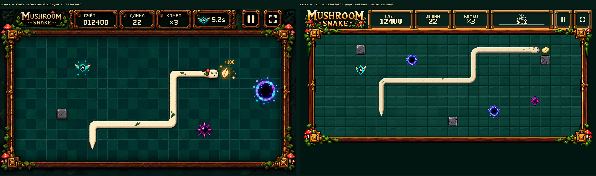
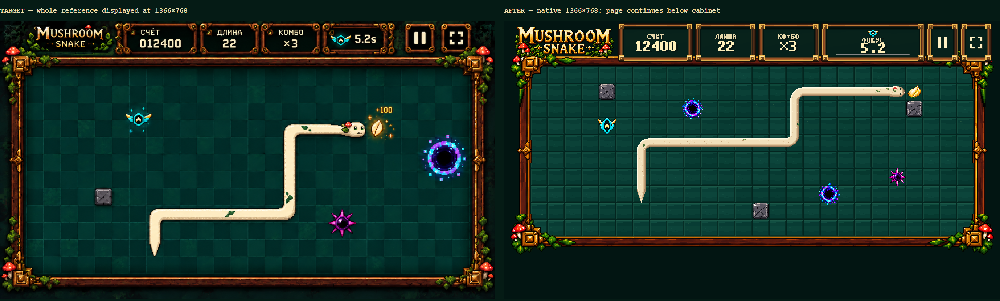
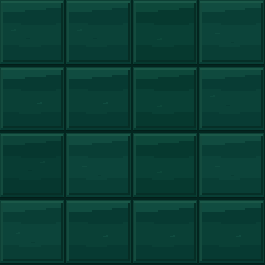
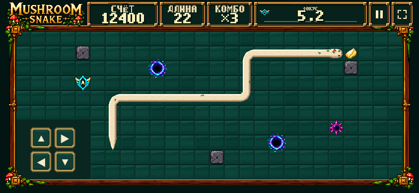
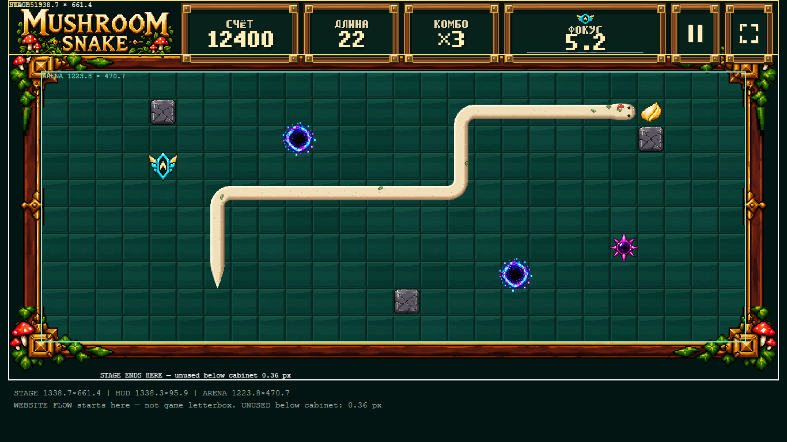

Ровно 6 review images. Native runtime screenshots показаны 1:1 CSS px, без shrink-to-fit. Сравнения прокручиваются горизонтально. TARGET целиком показан в таком же display box, как AFTER: 1920×1080 / 1366×768.
Playable DEV · Report · Raw measurements
| Embedded viewport | Stage | Cabinet | Reserved empty space below cabinet |
|---|---|---|---|
| 1920×1080 | 1881.6×919.5 | 1882×919.6 | ≈0 px (−0.007 rounding) |
| 1366×768 | 1338.7×661.4 | 1338.3×661 | 0.36 px rounding |
Physical wood/brass modules, live Cyrillic bitmap typography, square cabinet buttons, heavier original perimeter and static emerald material tiles. No random arena clutter. V5.6 / simulation / gameplay / audio / object source art unchanged.
Screenshots use the same clearly identified 22-cell QA composition fixture as cdf1a30; short actual Training interaction is verified separately. Visual approval remains a human decision.





STOP for human visual review. No TEST / Production deployment.